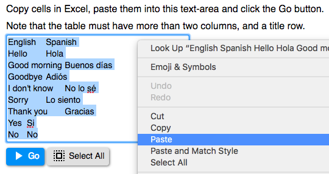
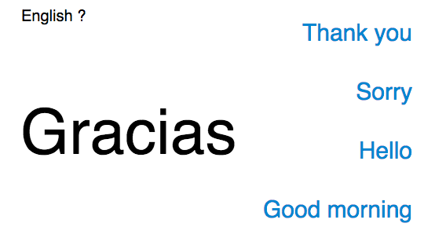
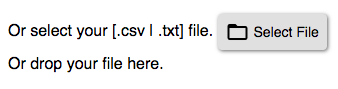

Memorizer: 단어등을 외우기 위한 편리한 도구입니다
메인 페이지 를 열고 "Go" 를 클릭하세요!

https://mochihashi.github.io/memorizer/
특징
- 자신이 외우고 싶은 단어리스트를 Excel로 만들고 지정할 수 있습니다.
- 오프라인 경우에도 사용할 수 있습니다. memorizer.zip 를 다운로드해서, 안에있는 index.html 를 브라우저로 엽니다.
데모 페이지
sample.html사용 방법
- Excel로 사전 테이블을 만들고 클립보드에 복사합니다(Ctrl+C). 테이블은 2열이상, 제1행은 제목 이름을 입력합니다. 사전 테이블의 예입니다:
English Spanish Hello Hola Good morning Buenos días Goodbye Adiós I don't know No lo sé Sorry Lo siento Thank you Gracias Yes Si No No - 브라우저로 메인 페이지 를 연 후, 1번에서 복사한 클립보드의 내용을 붙여서(Ctrl+V) 「Go」버튼을 누릅니다.
 - 질문이 표시되면 정답을 선택합니다.

- 틀린 경우, 정답이 표시되고 틀린 질문은 나중에 다시 반복됩니다.

- 모든 질문이 정답일 경우 질문은 끝납니다.

- 타이틀의 열을 바꾸면,

- 질문의 열도 바뀝니다.

파일에서 입력하기
클립보드에서 붙이는 방법 이외에 사진파일을 선택해도 됩니다.- Excel에서 사전파일을 편집하여 워크시트를 텍스트파일로 저장합니다.
- 「파일」 메뉴에서 「새이름으로 저장」을 누르면 다이얼로그가 열립니다.
- 「포맷」 란에、「CSV (.csv)」또는「Unicode텍스트 (.txt)」를 선택하고 저장합니다.

- 메인 페이지에서, 「Select File」버튼을 누르고、저장한 텍스트파일을 선택합니다.
